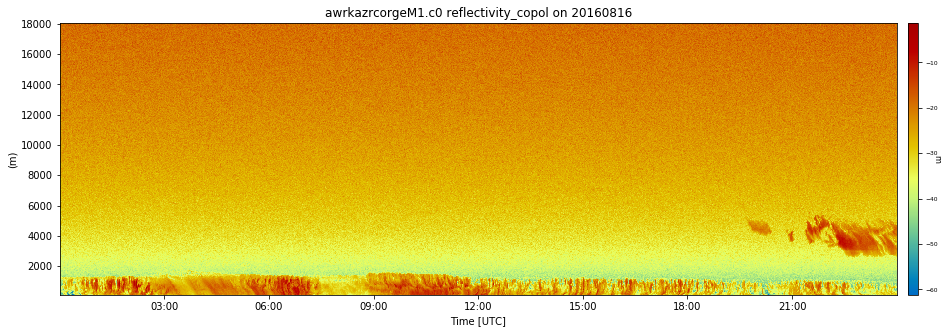
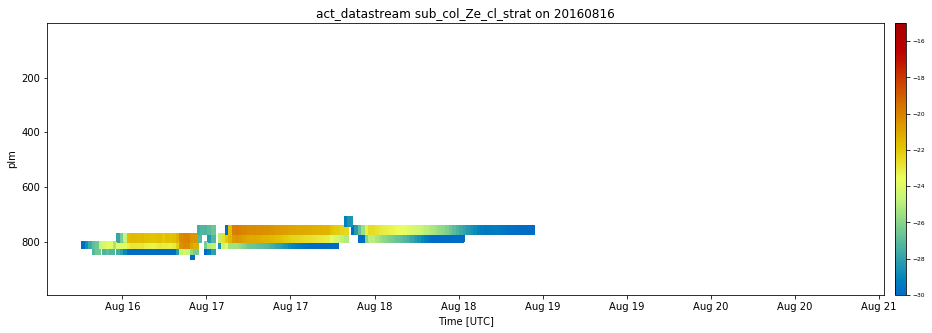

EMC^2 demo notebook¶
In this notebook we show an example of how to run EMC2 using ModelE and HSRL data
[1]:
import emc2
import act
%pylab inline
Populating the interactive namespace from numpy and matplotlib
First, we load the model data using the ModelE object
[2]:
model_path = 'allvars.SCM_AWR_linft_BT0_unNa_noaer.nc'
my_model = emc2.core.model.ModelE(model_path)
After that, we load in the KAZR data using the KAZR object.
[3]:
KAZR = emc2.core.instruments.KAZR('nsa')
KAZR.read_arm_netcdf_file('awrkazrcorgeM1.c0.20160816.000001.nc')
[4]:
KAZR.ds
[4]:
<xarray.Dataset>
Dimensions: (range: 600, time: 43262)
Coordinates:
* time (time) datetime64[ns] 2016-08-16T00:00:01.172000 ... 2016-08-16T23:59:58.015000
* range (range) float32 100.679245 ... 18058.242
Data variables:
base_time datetime64[ns] 2016-08-16
time_offset (time) datetime64[ns] 2016-08-16T00:00:01.172000 ... 2016-08-16T23:59:58.015000
reflectivity_copol (time, range) float32 dask.array<chunksize=(43262, 600), meta=np.ndarray>
qc_reflectivity_copol (time, range) int32 dask.array<chunksize=(43262, 600), meta=np.ndarray>
gaseous_attenuation_correction_copol (time, range) float32 dask.array<chunksize=(43262, 600), meta=np.ndarray>
qc_gaseous_attenuation_correction_copol (time, range) int32 dask.array<chunksize=(43262, 600), meta=np.ndarray>
mean_doppler_velocity_copol (time, range) float32 dask.array<chunksize=(43262, 600), meta=np.ndarray>
qc_mean_doppler_velocity_copol (time, range) int32 dask.array<chunksize=(43262, 600), meta=np.ndarray>
spectral_width_copol (time, range) float32 dask.array<chunksize=(43262, 600), meta=np.ndarray>
qc_spectral_width_copol (time, range) int32 dask.array<chunksize=(43262, 600), meta=np.ndarray>
signal_to_noise_ratio_copol (time, range) float32 dask.array<chunksize=(43262, 600), meta=np.ndarray>
significant_detection_mask (time, range) float32 dask.array<chunksize=(43262, 600), meta=np.ndarray>
mean_doppler_velocity_copol_dealias_flag (time, range) float32 dask.array<chunksize=(43262, 600), meta=np.ndarray>
rx_noise (time) float32 dask.array<chunksize=(43262,), meta=np.ndarray>
sky_noise_copol (time) float32 dask.array<chunksize=(43262,), meta=np.ndarray>
cold_noise_copol (time) float32 dask.array<chunksize=(43262,), meta=np.ndarray>
hot_noise_copol (time) float32 dask.array<chunksize=(43262,), meta=np.ndarray>
temp (time, range) float32 dask.array<chunksize=(43262, 600), meta=np.ndarray>
qc_temp (time, range) int32 dask.array<chunksize=(43262, 600), meta=np.ndarray>
rh (time, range) float32 dask.array<chunksize=(43262, 600), meta=np.ndarray>
qc_rh (time, range) int32 dask.array<chunksize=(43262, 600), meta=np.ndarray>
bar_pres (time, range) float32 dask.array<chunksize=(43262, 600), meta=np.ndarray>
qc_bar_pres (time, range) int32 dask.array<chunksize=(43262, 600), meta=np.ndarray>
lat float32 ...
lon float32 ...
alt float32 ...
Attributes:
command_line: idl -R -n kazrcorc0 -s awr -f M1 -b 20160816...
Conventions: ARM-1.2
process_version: vap-kazrcor-5.0.0-devel
input_datastreams: awrkazrgeM1.a1 : 2.8 : 20160816.000001\nawrk...
dod_version: kazrcorge-c0-1.5
site_id: awr
platform_id: kazrcorge
facility_id: M1
data_level: c0
location_description: ARM West Antarctic Radiation Experiment (AWA...
datastream: awrkazrcorgeM1.c0
antenna_altitude: 3.66 m
antenna_diameter: 1.81 m
attenuation_short_pulse: 4.000000 dB
clutter_filter_len: 0
fft_len: 512
num_spectral_averages: 11
nyquist_velocity: 6.068320 m/s
processing_mode: 2
pulse_repetition_frequency: 2820.08 Hz
pulse_width_short_pulse: 333 ns
radar_constant_offset_flag: 0
radar_constant_offset: 0.000000 dB
radar_operating_frequency: 34.830000 GHz
range_gate_spacing: 29.979246 m
cal_constant_copol: 0.0
comment: Reflectivity values have not yet been calibr...
doi: 10.5439/1389054
history: created by user ttoto on machine talc.dmf.ar...
_file_dates: ['20160816']
_file_times: ['000001']
_datastream: awrkazrcorgeM1.c0
_arm_standards_flag: ARMStandardsFlag.OKThe following command will generate 8 subcolumns per time period of simulated KAZR data.
[ ]:
my_model = emc2.simulator.main.make_simulated_data(my_model, KAZR, 8)
[6]:
my_model.ds
[6]:
<xarray.Dataset>
Dimensions: (plm: 63, subcolumn: 8, time: 240)
Coordinates:
* plm (plm) float64 995.0 985.0 975.0 ... 0.247 0.139
* time (time) datetime64[ns] 2016-08-16T01:15:00 ... 2016-08-21T00:45:00
* subcolumn (subcolumn) int64 0 1 2 3 4 5 6 7
lat float32 -77.85
lon float32 166.72
Data variables:
QCImc (time, plm) float32 dask.array<chunksize=(240, 63), meta=np.ndarray>
QCLmc (time, plm) float32 dask.array<chunksize=(240, 63), meta=np.ndarray>
QPImc (time, plm) float32 dask.array<chunksize=(240, 63), meta=np.ndarray>
QPLmc (time, plm) float32 dask.array<chunksize=(240, 63), meta=np.ndarray>
axyp float32 dask.array<chunksize=(), meta=np.ndarray>
cIWPss (time) float32 dask.array<chunksize=(240,), meta=np.ndarray>
cLWPss (time) float32 dask.array<chunksize=(240,), meta=np.ndarray>
cldmc (time, plm) float32 dask.array<chunksize=(240, 63), meta=np.ndarray>
cldmc_2d (time) float32 dask.array<chunksize=(240,), meta=np.ndarray>
cldmcci (time, plm) float32 dask.array<chunksize=(240, 63), meta=np.ndarray>
cldmccl (time, plm) float32 dask.array<chunksize=(240, 63), meta=np.ndarray>
cldmcpi (time, plm) float32 dask.array<chunksize=(240, 63), meta=np.ndarray>
cldmcpl (time, plm) float32 dask.array<chunksize=(240, 63), meta=np.ndarray>
cldss (time, plm) float32 dask.array<chunksize=(240, 63), meta=np.ndarray>
cldss_2d (time) float32 dask.array<chunksize=(240,), meta=np.ndarray>
cldssci (time, plm) float32 dask.array<chunksize=(240, 63), meta=np.ndarray>
cldsscl (time, plm) float32 dask.array<chunksize=(240, 63), meta=np.ndarray>
cldsspi (time, plm) float32 dask.array<chunksize=(240, 63), meta=np.ndarray>
cldsspl (time, plm) float32 dask.array<chunksize=(240, 63), meta=np.ndarray>
cldtot_2d (time) float32 dask.array<chunksize=(240,), meta=np.ndarray>
dq_ls (time, plm) float32 dask.array<chunksize=(240, 63), meta=np.ndarray>
dq_mc (time, plm) float32 dask.array<chunksize=(240, 63), meta=np.ndarray>
dq_nudge (time, plm) float32 dask.array<chunksize=(240, 63), meta=np.ndarray>
dq_ss (time, plm) float32 dask.array<chunksize=(240, 63), meta=np.ndarray>
dq_turb (time, plm) float32 dask.array<chunksize=(240, 63), meta=np.ndarray>
dth_ls (time, plm) float32 dask.array<chunksize=(240, 63), meta=np.ndarray>
dth_lw (time, plm) float32 dask.array<chunksize=(240, 63), meta=np.ndarray>
dth_mc (time, plm) float32 dask.array<chunksize=(240, 63), meta=np.ndarray>
dth_nudge (time, plm) float32 dask.array<chunksize=(240, 63), meta=np.ndarray>
dth_rad (time, plm) float32 dask.array<chunksize=(240, 63), meta=np.ndarray>
dth_ss (time, plm) float32 dask.array<chunksize=(240, 63), meta=np.ndarray>
dth_sw (time, plm) float32 dask.array<chunksize=(240, 63), meta=np.ndarray>
dth_turb (time, plm) float32 dask.array<chunksize=(240, 63), meta=np.ndarray>
e_turb (time, plm) float32 dask.array<chunksize=(240, 63), meta=np.ndarray>
gtempr (time) float32 dask.array<chunksize=(240,), meta=np.ndarray>
isccp_tau (time) float32 dask.array<chunksize=(240,), meta=np.ndarray>
iwp (time) float32 dask.array<chunksize=(240,), meta=np.ndarray>
kh_turb (time, plm) float32 dask.array<chunksize=(240, 63), meta=np.ndarray>
km_turb (time, plm) float32 dask.array<chunksize=(240, 63), meta=np.ndarray>
len_turb (time, plm) float32 dask.array<chunksize=(240, 63), meta=np.ndarray>
lhflx (time) float32 dask.array<chunksize=(240,), meta=np.ndarray>
lwdp (time, plm) float32 dask.array<chunksize=(240, 63), meta=np.ndarray>
lwds (time) float32 dask.array<chunksize=(240,), meta=np.ndarray>
lwdscs (time) float32 dask.array<chunksize=(240,), meta=np.ndarray>
lwp (time) float32 dask.array<chunksize=(240,), meta=np.ndarray>
lwup (time, plm) float32 dask.array<chunksize=(240, 63), meta=np.ndarray>
lwus (time) float32 dask.array<chunksize=(240,), meta=np.ndarray>
mcp (time) float32 dask.array<chunksize=(240,), meta=np.ndarray>
nci (time, plm) float32 dask.array<chunksize=(240, 63), meta=np.ndarray>
nciic (time, plm) float32 dask.array<chunksize=(240, 63), meta=np.ndarray>
ncl (time, plm) float32 dask.array<chunksize=(240, 63), meta=np.ndarray>
nclic (time, plm) float32 dask.array<chunksize=(240, 63), meta=np.ndarray>
npi (time, plm) float32 dask.array<chunksize=(240, 63), meta=np.ndarray>
npl (time, plm) float32 dask.array<chunksize=(240, 63), meta=np.ndarray>
olrcs (time) float32 dask.array<chunksize=(240,), meta=np.ndarray>
olrrad (time) float32 dask.array<chunksize=(240,), meta=np.ndarray>
pIWPss (time) float32 dask.array<chunksize=(240,), meta=np.ndarray>
pLWPss (time) float32 dask.array<chunksize=(240,), meta=np.ndarray>
p_3d (time, plm) float32 dask.array<chunksize=(240, 63), meta=np.ndarray>
p_surf (time) float32 dask.array<chunksize=(240,), meta=np.ndarray>
pblht (time) float32 dask.array<chunksize=(240,), meta=np.ndarray>
pblht_bp (time) float32 dask.array<chunksize=(240,), meta=np.ndarray>
prec (time) float32 dask.array<chunksize=(240,), meta=np.ndarray>
pwv (time) float32 dask.array<chunksize=(240,), meta=np.ndarray>
q (time, plm) float32 dask.array<chunksize=(240, 63), meta=np.ndarray>
qci (time, plm) float32 dask.array<chunksize=(240, 63), meta=np.ndarray>
qcl (time, plm) float32 dask.array<chunksize=(240, 63), meta=np.ndarray>
qpi (time, plm) float32 dask.array<chunksize=(240, 63), meta=np.ndarray>
qpl (time, plm) float32 dask.array<chunksize=(240, 63), meta=np.ndarray>
re_mcci (time, plm) float32 dask.array<chunksize=(240, 63), meta=np.ndarray>
re_mccl (time, plm) float32 dask.array<chunksize=(240, 63), meta=np.ndarray>
re_mcpi (time, plm) float32 dask.array<chunksize=(240, 63), meta=np.ndarray>
re_mcpl (time, plm) float32 dask.array<chunksize=(240, 63), meta=np.ndarray>
re_ssci (time, plm) float32 dask.array<chunksize=(240, 63), meta=np.ndarray>
re_sscl (time, plm) float32 dask.array<chunksize=(240, 63), meta=np.ndarray>
re_sspi (time, plm) float32 dask.array<chunksize=(240, 63), meta=np.ndarray>
re_sspl (time, plm) float32 dask.array<chunksize=(240, 63), meta=np.ndarray>
rhw (time, plm) float32 dask.array<chunksize=(240, 63), meta=np.ndarray>
ri_turb (time, plm) float32 dask.array<chunksize=(240, 63), meta=np.ndarray>
shflx (time) float32 dask.array<chunksize=(240,), meta=np.ndarray>
ssp (time) float32 dask.array<chunksize=(240,), meta=np.ndarray>
swdf (time) float32 dask.array<chunksize=(240,), meta=np.ndarray>
swdp (time, plm) float32 dask.array<chunksize=(240, 63), meta=np.ndarray>
swds (time) float32 dask.array<chunksize=(240,), meta=np.ndarray>
swup (time, plm) float32 dask.array<chunksize=(240, 63), meta=np.ndarray>
swus (time) float32 dask.array<chunksize=(240,), meta=np.ndarray>
t (time, plm) float32 dask.array<chunksize=(240, 63), meta=np.ndarray>
tau_mc (time, plm) float32 dask.array<chunksize=(240, 63), meta=np.ndarray>
tau_ss (time, plm) float32 dask.array<chunksize=(240, 63), meta=np.ndarray>
th (time, plm) float32 dask.array<chunksize=(240, 63), meta=np.ndarray>
u (time, plm) float32 dask.array<chunksize=(240, 63), meta=np.ndarray>
ustar (time) float32 dask.array<chunksize=(240,), meta=np.ndarray>
v (time, plm) float32 dask.array<chunksize=(240, 63), meta=np.ndarray>
z (time, plm) float32 dask.array<chunksize=(240, 63), meta=np.ndarray>
conv_frac_subcolumns_cl (subcolumn, time, plm) bool False False ... False
conv_frac_subcolumns_ci (subcolumn, time, plm) bool False False ... False
conv_frac_subcolumns_pl (subcolumn, time, plm) bool False False ... False
conv_frac_subcolumns_pi (subcolumn, time, plm) bool False False ... False
strat_frac_subcolumns_cl (subcolumn, time, plm) bool False False ... False
strat_frac_subcolumns_ci (subcolumn, time, plm) bool False False ... False
strat_frac_subcolumns_pl (subcolumn, time, plm) bool False False ... False
strat_frac_subcolumns_pi (subcolumn, time, plm) bool False False ... False
strat_q_subcolumns_cl (subcolumn, time, plm) float32 0.0 0.0 ... 0.0
strat_n_subcolumns_cl (subcolumn, time, plm) float32 0.0 0.0 ... 0.0
conv_q_subcolumns_cl (subcolumn, time, plm) float32 0.0 0.0 ... 0.0
strat_q_subcolumns_ci (subcolumn, time, plm) float32 0.0 0.0 ... 0.0
strat_n_subcolumns_ci (subcolumn, time, plm) float32 0.0 0.0 ... 0.0
conv_q_subcolumns_ci (subcolumn, time, plm) float32 0.0 0.0 ... 0.0
strat_q_subcolumns_pl (subcolumn, time, plm) float32 0.0 0.0 ... 0.0
strat_n_subcolumns_pl (subcolumn, time, plm) float32 0.0 0.0 ... 0.0
conv_q_subcolumns_pl (subcolumn, time, plm) float32 0.0 0.0 ... 0.0
strat_q_subcolumns_pi (subcolumn, time, plm) float32 0.0 0.0 ... 0.0
strat_n_subcolumns_pi (subcolumn, time, plm) float32 0.0 0.0 ... 0.0
conv_q_subcolumns_pi (subcolumn, time, plm) float32 0.0 0.0 ... 0.0
sub_col_Ze_tot_strat (subcolumn, time, plm) float64 nan nan ... nan
sub_col_Vd_tot_strat (subcolumn, time, plm) float64 nan nan ... nan
sub_col_sigma_d_tot_strat (subcolumn, time, plm) float64 nan nan ... nan
sub_col_Ze_pi_strat (subcolumn, time, plm) float64 -inf -inf ... -inf
sub_col_Vd_pi_strat (subcolumn, time, plm) float64 nan nan ... nan
sub_col_sigma_d_pi_strat (subcolumn, time, plm) float64 nan nan ... nan
mu (subcolumn, time, plm) float64 12.58 ... 12.58
lambda (subcolumn, time, plm) float64 nan nan ... nan
N_0 (subcolumn, time, plm) float64 nan nan ... nan
sub_col_Ze_pl_strat (subcolumn, time, plm) float64 -inf -inf ... -inf
sub_col_Vd_pl_strat (subcolumn, time, plm) float64 nan nan ... nan
sub_col_sigma_d_pl_strat (subcolumn, time, plm) float64 nan nan ... nan
sub_col_Ze_ci_strat (subcolumn, time, plm) float64 -inf -inf ... -inf
sub_col_Vd_ci_strat (subcolumn, time, plm) float64 nan nan ... nan
sub_col_sigma_d_ci_strat (subcolumn, time, plm) float64 nan nan ... nan
sub_col_Ze_cl_strat (subcolumn, time, plm) float64 -inf -inf ... -inf
sub_col_Vd_cl_strat (subcolumn, time, plm) float64 nan nan ... nan
sub_col_sigma_d_cl_strat (subcolumn, time, plm) float64 nan nan ... nan
kappa_wv (time, plm) float64 dask.array<chunksize=(240, 63), meta=np.ndarray>
kappa_o2 (time, plm) float32 0.019597711 ... 1.1832672e-09
kappa_att (time, plm) float64 dask.array<chunksize=(240, 63), meta=np.ndarray>
sub_col_Ze_att_tot_strat (subcolumn, time, plm) float64 nan nan ... nan
Ze (time, plm) float32 dask.array<chunksize=(240, 63), meta=np.ndarray>
sub_col_Ze_cl_conv (time, plm) float32 dask.array<chunksize=(240, 63), meta=np.ndarray>
sub_col_Ze_tot_conv (time, plm) float32 dask.array<chunksize=(240, 63), meta=np.ndarray>
sub_col_Ze_ci_conv (time, plm) float32 dask.array<chunksize=(240, 63), meta=np.ndarray>
sub_col_Ze_pl_conv (time, plm) float32 dask.array<chunksize=(240, 63), meta=np.ndarray>
sub_col_Ze_pi_conv (time, plm) float32 dask.array<chunksize=(240, 63), meta=np.ndarray>
sub_col_Ze_att_tot_conv (time, plm) float64 dask.array<chunksize=(240, 63), meta=np.ndarray>
Attributes:
xlabel: SCM_AWR_linft_BT0_unNa_noaer SCM_AWARE (M-PAC...
history: Fri Sep 6 17:21:45 2019: ncks -A allsteps.si...
history_of_appended_files: Fri Sep 6 17:21:45 2019: Appended file allst...
NCO: 4.6.7
_file_dates: ['allvars']
_file_times: ['SCM_AWR_linft_BT0_unNa_noaer']
_datastream: act_datastream
_arm_standards_flag: ARMStandardsFlag.OKEMC^2 interacts with the Atmospheric Community Toolkit for easy to create visualizations. You can use the TimeSeriesDisplay object to make visualizations of both the observation and simulated radar parameters.
[16]:
display = act.plotting.TimeSeriesDisplay(KAZR.ds, figsize=(15,5))
display.plot('reflectivity_copol', cmap='act_HomeyerRainbow', subplot_index=(0, ))
[16]:
<matplotlib.axes._subplots.AxesSubplot at 0x23395e350c8>

[18]:
display.fig.savefig('Kazr_refl.png', dpi=300)
[14]:
model_display = act.plotting.TimeSeriesDisplay(my_model.ds.sel(subcolumn=0), figsize=(15,5))
model_display.plot('sub_col_Ze_cl_strat', cmap='act_HomeyerRainbow', vmin=-30, vmax=-15)
model_display.axes[0].invert_yaxis()
model_display.fig.savefig('model_Ze.png', dpi=150)
C:\Users\rjackson\AppData\Local\Continuum\anaconda3\envs\emc2_env\lib\site-packages\act\plotting\plot.py:84: UserWarning: Could not discern datastreamname and dict or tuple were not provided. Using defaultname of act_datastream!
"name of act_datastream!"), UserWarning)

[ ]: